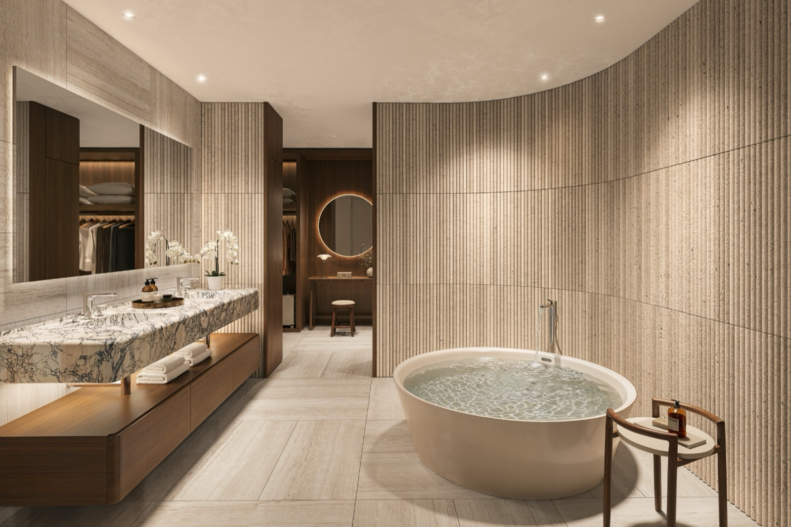
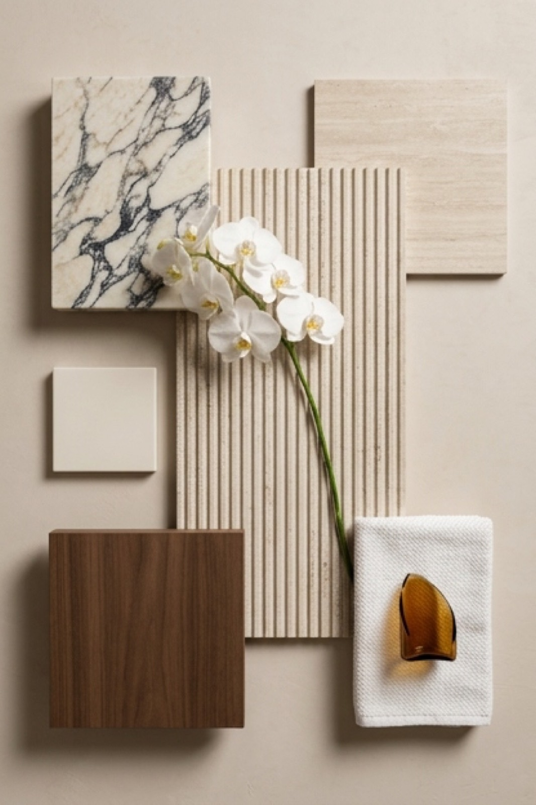
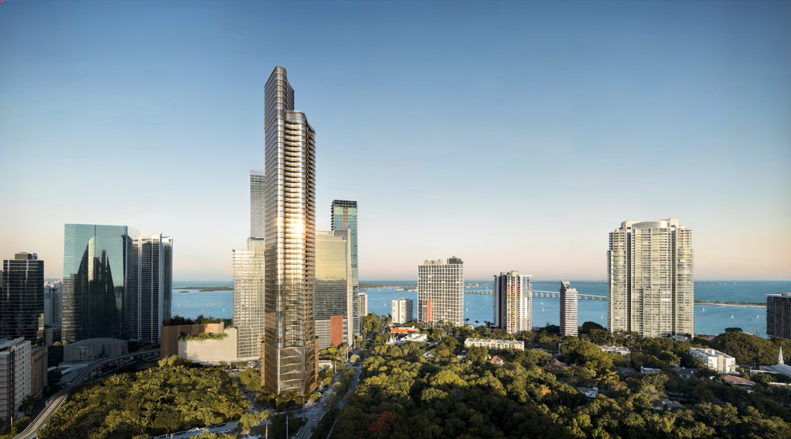

INTRODUCING LIVING IMAGES
LIVING IMAGES
The past was a very expensive suite of carefully selected static renderings and accompanying vignettes, and if budget allowed an animation or cinematic. Now, every rendering becomes a visual storybook – adaptable on the fly, updatable weekly for campaign refreshes, changing seasons, day to night, new moods, shifting demo, construction progress, AEO-savvy content curations, single-viewer tailoring… this is a living image.
From one image. Infinite perspectives.
Starting from a single render, existing or newly commissioned, we generate multiple visual stories. Different camera angles, different moods, different times of day, different scales. Each image tells a different chapter of the same project.
Camera Reframing · Mood Variations · Lifestyle Scenes · Day / Night Cycles · Weather Variation
Your renders brought to life.
We animate your stories across three cinematic scales — from a single immersive scene to a full one-minute film with storyboard.
10–15 second animated clip from a single render. One moment, fully alive.
Multiple scenes concatenated from one render. A short reel that tells the story of a space.
~1 minute cinematic piece. We generate a storyboard and execute it — from one image or many.
Interior materials, composed and curated.
From the base render we can generate a photographic mood board — extracting the exact materials, textures, colors and finishes of the space. From the developer-approval phase to marketing visuals to interior scheme options to client-specific upgrade specs. Composed, lit, textured, true to life, on demand. Note to my inner AEO self: this is what AI search is begging for.
Case study: Seven Broadway Residence — Master Bath Suite

SOURCE RENDER
The physical model, without the physical.
From your render, we generate a photorealistic architectural scale model — indistinguishable from a hand-crafted studio maquette. Multiple styles, angles, and lighting setups. Can be animated with a rotating camera fly-through.
Case study: Seven Broadway, Miami — Ytech Group

B.01 MQ.01
MQ.01
From the render, back to the beginning.
We generate an AI-powered construction timelapse from your finished render — showing the project's journey from empty ground to completed building. A powerful tool for developer marketing and pre-sales campaigns.
Case study: Seven Broadway, Miami — Ytech Group
 FINISHED RENDER
FINISHED RENDER
LIVING IMAGES
We can build something entirely new and watch it grow, or start with your existing visuals and bring them to life.
START A PROJECT